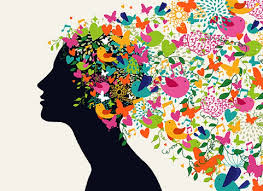

Analytical Thinking
During daily do nows, students were introduced to a game in progress and were given the task of fixing the game by changing/manipulating certain components of its code. The students were to examine the already present codes and see what was missing to complete the idea of the game. Through trial and error, they picked up codes, put them away, until they could finally complete the structure of the game.
Thinking Creatively
The hands on scratch projects require students to contstruct their own ideas for projects and bring the visual to life through the scratch platform. Most (if not all) projects were related to components of Tibetan culture with the purpose of educating others. In the process of forming an idea for their projects, students thought of different components and all based their projects on a different aspect of Tibetan culture. They thought divergently as some students focused on written language, dance, clothing,stories, and more.
Connection to Identity
Identity is what defines us, and without our own unique characteristics, we would fade away into society. In life, different events that have impacted us developes our identity and our sense of self. Being surrounded by many others who look similar, speak the same language, and engage in the same practices provides a comfortable space where we can freely express ourselves. Through the Tibetan guest speakers, we learned the values of being a Tibetan and what it means to be a Tibetan. Acknowledging the importance of knowing/learning about our cultural background and the language is taking a step forward in strengthening one's connection with their identity.
Hands On Programming

Hands on programming allows students to practice and program anything they wish. Mostly on scratch. They are given the time to learn and explore all the possibilities that programming has to offer. Towards the end of every class, students are exposed to website building through apps such as Sublime Script. Using these scripts students manipulate components of a website. These hands on projects and assignments have been a great help to better students programming